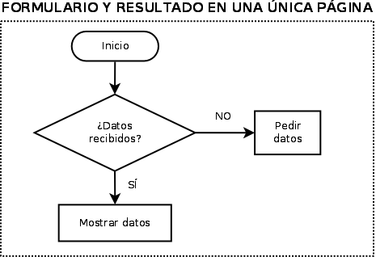

Validación 1 - Formulario y resultado en una única página
Escriba un programa que solicite y reciba (sin validar) un nombre, un número de teléfono y una dirección de correo y que conste de una única página.
Comentarios
- No es necesario validar la entrada del usuario. Aunque se dejen los campos vacíos, se debe mostrar el resultado.
- El siguiente diagrama muestra las comprobaciones que es preciso realizar:

Esto se puede traducir en la siguiente estructura del programa:
recoger datos if (datosRecibidos) { mostrar datos } else { mostrar formulario } - Para que el atributo action del formulario o el enlace a la página apunte a sí mismo, independientemente de la ubicación del archivo o de su nombre, se puede utilizar la variable predefinida $_SERVER[PHP_SELF].
- Para comprobar que se han recibido datos, se puede dar un valor al atributo name del botón Enviar (submit) y comprobar que se ha recibido ese dato (con la función isset, por ejemplo).
- Para no repetir la cabecera dos veces, se puede crear una función cabecera($titulo), cuyo argumento se utilice en <title> y <h1>.